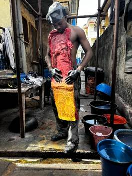
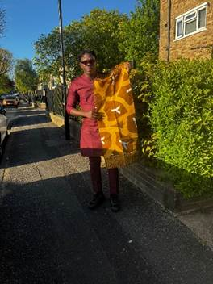

A journey through our wardrobes, our waste, and the mindful choices that can reshape the future of fashion.
The first chapter of an ongoing campaign
Thread Carefully is not a single event, it's the beginning of a campaign. It is an invitation to a new dawn: a new conversation about how we can protect the planet, one thread at a time. Fast fashion, and increasingly ultra-fast fashion, drive overconsumption, water waste, carbon emissions, and labour exploitation on a scale most of us never see. This exhibition and colloquium are our pivot point: the first public chapter in an ongoing effort to make the true cost of clothing visible, and to build habits of care instead of disposal.


His work asks urgent questions about what we consume, what we discard, and what we inherit. Through hand-dyeing, batik wax resist, natural pigments, and recovered materials, he creates textiles that carry both personal and political weight.
Thread Carefully is his most ambitious exhibition to date. A gathering of works that span frustration and hope, tradition and innovation, grief and celebration. It is an invitation not just to look, but to feel the weight of a thread and ask: who made this, and at what cost?
Yíímiiká is currently based in London, where he continues to develop his practice at the intersection of textile art, cultural heritage, and sustainable fashion.